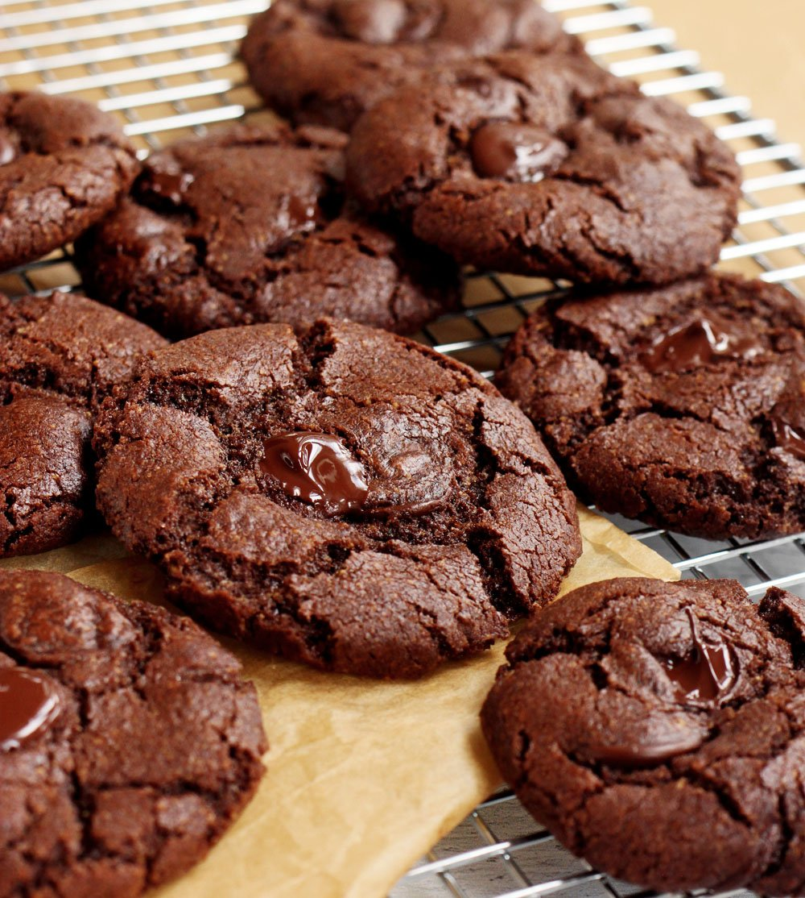

Spaghetti Carbonara

Ingredients:
- 200g spaghetti
- 100g pancetta or guanciale, diced
- 2 large eggs
- 50g grated Pecorino Romano cheese
- 50g grated Parmesan cheese
- Black pepper, freshly ground
- Salt (for pasta water)
Instructions:
- Bring a large pot of salted water to a boil and cook spaghetti according to package instructions.
- While pasta is cooking, cook pancetta in a large skillet over medium heat until crispy.
- In a bowl, whisk together eggs, Pecorino Romano cheese, Parmesan cheese, and a generous amount of black pepper.
- Drain spaghetti, reserving some pasta water. Immediately add hot pasta to the pancetta in the skillet and toss to coat.
- Remove skillet from heat and quickly stir in the egg mixture, tossing continuously until creamy (add reserved pasta water if needed to loosen).
- Serve immediately with additional grated cheese and black pepper.
Chicken Tikka Masala
Ingredients:
- 500g boneless, skinless chicken thighs, cut into bite-sized pieces
- 1 cup plain yogurt
- 2 tbsp vegetable oil
- 1 onion, finely chopped
- 3 garlic cloves, minced
- 1 tbsp ginger, grated
- 2 tsp ground cumin
- 2 tsp ground coriander
- 1 tsp turmeric
- 1 tsp paprika
- 1/2 tsp cayenne pepper (adjust to taste)
- 1 cup tomato puree
- 1 cup heavy cream
- Salt and pepper to taste
- Fresh cilantro leaves for garnish
Instructions:
- In a bowl, combine yogurt with spices (cumin, coriander, turmeric, paprika, cayenne pepper).
- Add chicken pieces to yogurt mixture, coat well, and marinate for at least 1 hour (preferably overnight).
- Heat oil in a large skillet over medium heat. Add onions and cook until softened.
- Add garlic and ginger, cook for another minute until fragrant.
- Add marinated chicken and cook until browned.
- Stir in tomato puree and heavy cream. Simmer until chicken is cooked through and sauce thickens.
- Season with salt and pepper to taste. Garnish with fresh cilantro leaves before serving.
Chocolate Chip Cookies

Ingredients:
- 1 cup unsalted butter, softened
- 1 cup granulated sugar
- 1 cup packed brown sugar
- 2 large eggs
- 2 tsp vanilla extract
- 3 cups all-purpose flour
- 1 tsp baking soda
- 1/2 tsp salt
- 2 cups semisweet chocolate chips
Instructions:
- Preheat oven to 350°F (175°C). Line baking sheets with parchment paper.
- In a large bowl, cream together butter, granulated sugar, and brown sugar until smooth.
- Beat in eggs, one at a time, then stir in vanilla extract.
- Combine flour, baking soda, and salt; gradually stir into the creamed mixture.
- Stir in chocolate chips.
- Drop by rounded spoonfuls onto prepared baking sheets.
- Bake for 10 to 12 minutes in the preheated oven, or until edges are golden brown.
- Cool on baking sheets for a few minutes before transferring to wire racks to cool completely.
Greek Salad

Ingredients:
- 4 cups chopped Romaine lettuce
- 1 cucumber, diced
- 1 cup cherry tomatoes, halved
- 1/2 red onion, thinly sliced
- 1/2 cup Kalamata olives, pitted
- 1/2 cup crumbled feta cheese
- 1/4 cup extra virgin olive oil
- 2 tbsp red wine vinegar
- 1 tsp dried oregano
- Salt and pepper to taste
Instructions:
- In a large bowl, combine lettuce, cucumber, tomatoes, red onion, olives, and feta cheese.
- In a small bowl, whisk together olive oil, red wine vinegar, oregano, salt, and pepper.
- Pour dressing over salad and toss to coat.
- Serve immediately, or refrigerate until ready to serve.